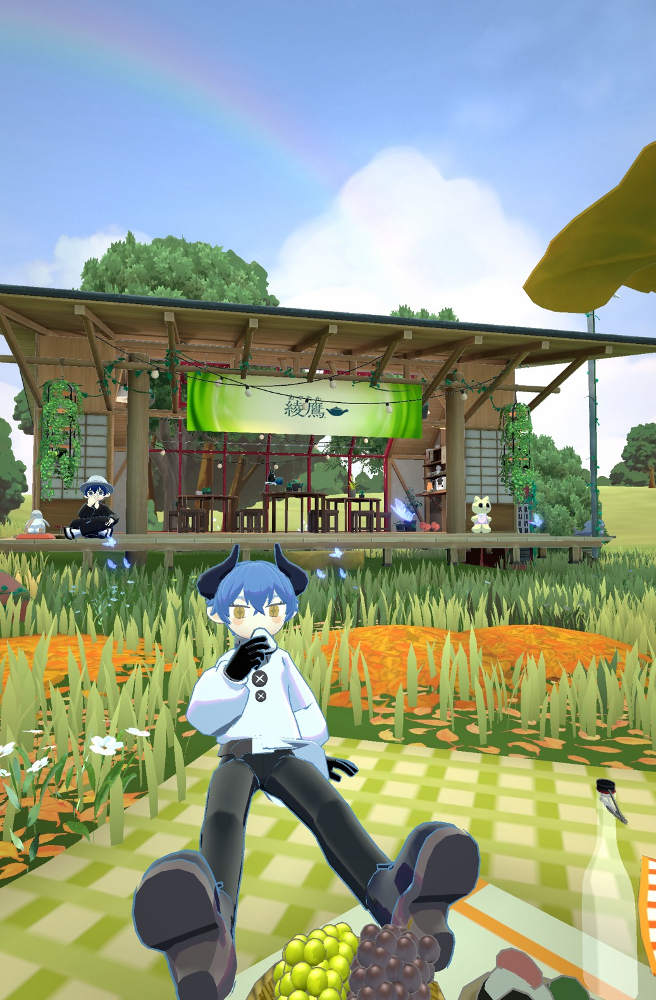

goghのスクリーンショットです
ギャラリーにQRコードあります！
フレンドなりましょう！
最新情報
- 2025/12/30 ホームページ開設
- 2025/12/31 リンク集追加
- 2026/01/01 ギャラリーを追加
- 2026/01/02 ギャラリーに画像を追加
- 2026/01/03 管理人からのお知らせを更新
- 2026/01/20 招待コード欄にOliveを追加

goghのスクリーンショットです
ギャラリーにQRコードあります！
フレンドなりましょう！